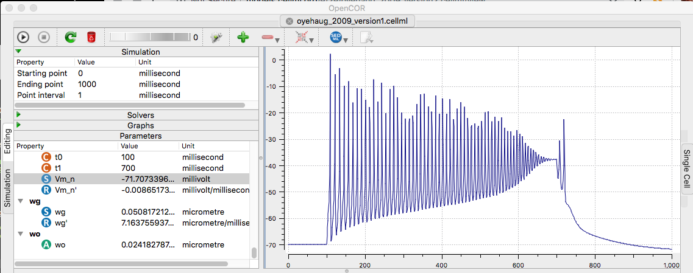
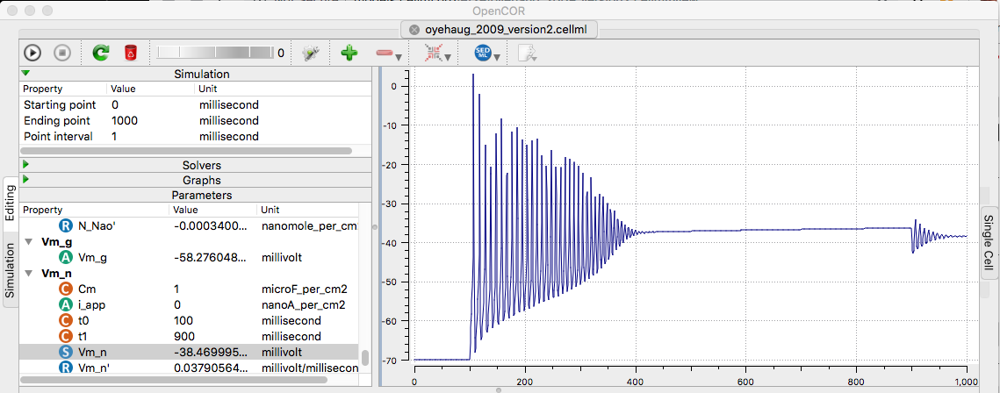

Oyehaug L, Ostby I, Lloyd CM, Omholt SW, Einevoll GT (2012) Dependence of spontaneous neuronal firing and depolarisation block on astroglial membrane transport mechanisms. J Comput Neurosci 32:147-65[PubMed]
is available at the cellml.org website: http://models.cellml.org/e/2e which contains links to http://models.cellml.org/e/2e/oyehaug_2009_version1.cellml/view http://models.cellml.org/e/2e/oyehaug_2009_version2.cellml/view "This cellML model is known to run in OpenCell and COR to recreate the published results. The units have been checked and they are consistent." (This is the paper authors version of the model). Example: running the version 1 and 2 models in opencor in their default configuration produces these graphs similar to figure 2a, b in the paper:  